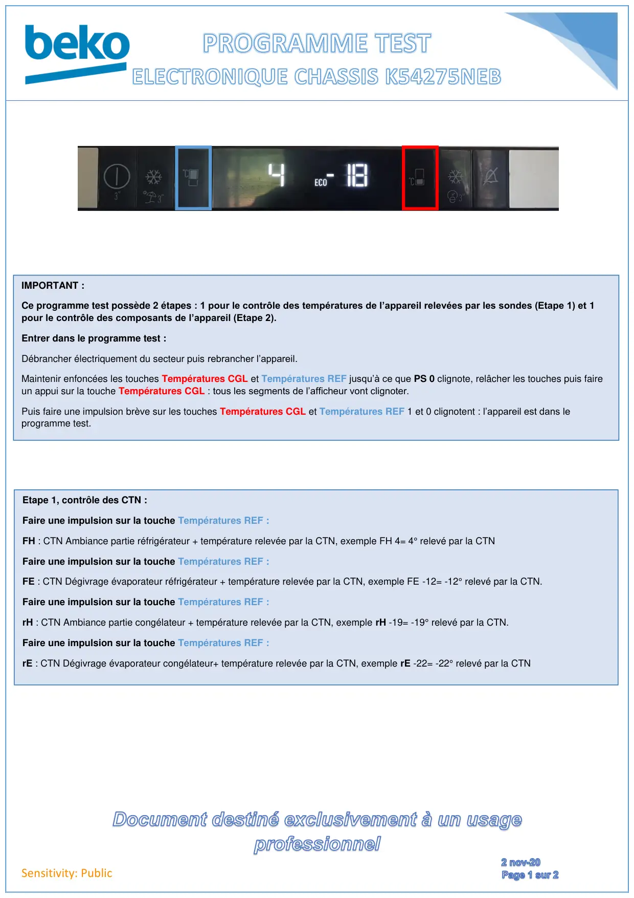
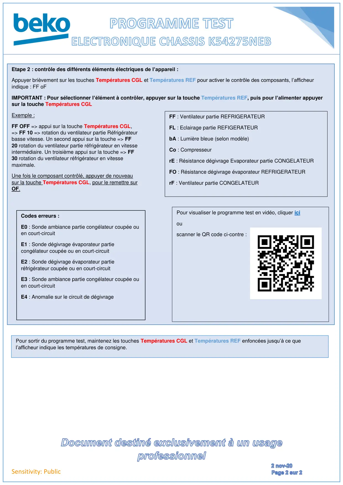

Prog Test electronique k54275neb

Sensitivity: PublicIMPORTANT :Ce programme test possède 2 étapes : 1 pour le contrôle des températures de l’appareil relevées par les sondes (Etape 1) et 1pour le contrôle des composants de l’appareil (Etape 2).Entrer dans le programme test :Débrancher électriquement du secteur puis rebrancher l’appareil.Maintenir enfoncées les touches Températures CGL et Températures REF jusqu’à ce que PS 0 clignote, relâcher les touches puis faireun appui sur la touche Températures CGL : tous les segments de l’afficheur vont clignoter.Puis faire une impulsion brève sur les touches Températures CGL et Températures REF 1 et 0 clignotent : l’appareil est dans leprogramme test.Etape 1, contrôle des CTN :Faire une impulsion sur la touche Températures REF :FH : CTN Ambiance partie réfrigérateur + température relevée par la CTN, exemple FH 4= 4° relevé par la CTNFaire une impulsion sur la touche Températures REF :FE : CTN Dégivrage évaporateur réfrigérateur + température relevée par la CTN, exemple FE -12= -12° relevé par la CTN.Faire une impulsion sur la touche Températures REF :rH : CTN Ambiance partie congélateur + température relevée par la CTN, exemple rH -19= -19° relevé par la CTN.Faire une impulsion sur la touche Températures REF :rE : CTN Dégivrage évaporateur congélateur+ température relevée par la CTN, exemple rE -22= -22° relevé par la CTN
1 / 2
Sensitivity: Publichttps://drive.google.com/file/d/1dAnt3qSr6nvAykjDg4EFkaG75Xpb0urm/view?usp=sharing ;;Etape 2 : contrôle des différents éléments électriques de l’appareil :Appuyer brièvement sur les touches Températures CGL et Températures REF pour activer le contrôle des composants, l’afficheurindique : FF oFIMPORTANT : Pour sélectionner l’élément à contrôler, appuyer sur la touche Températures REF, puis pour l’alimenter appuyersur la touche Températures CGLExemple :FF OFF => appui sur la touche Températures CGL,=> FF 10 => rotation du ventilateur partie Réfrigérateurbasse vitesse. Un second appui sur la touche => FF20 rotation du ventilateur partie réfrigérateur en vitesseintermédiaire. Un troisième appui sur la touche => FF30 rotation du ventilateur réfrigérateur en vitessemaximale.Une fois le composant contrôlé, appuyer de nouveausur la touche Températures CGL, pour le remettre surOF.FF : Ventilateur partie REFRIGERATEURFL : Eclairage partie REFIGERATEURbA : Lumière bleue (selon modèle)Co : CompresseurrE : Résistance dégivrage Evaporateur partie CONGELATEURFO : Résistance dégivrage évaporateur REFRIGERATEURrF : Ventilateur partie CONGELATEURPour sortir du programme test, maintenez les touches Températures CGL et Températures REF enfoncées jusqu’à ce quel’afficheur indique les températures de consigne.Pour visualiser le programme test en vidéo, cliquer iciouscanner le QR code ci-contre :Codes erreurs :E0 : Sonde ambiance partie congélateur coupée ouen court-circuitE1 : Sonde dégivrage évaporateur partiecongélateur coupée ou en court-circuitE2 : Sonde dégivrage évaporateur partieréfrigérateur coupée ou en court-circuitE3 : Sonde ambiance partie congélateur coupée ouen court-circuitE4 : Anomalie sur le circuit de dégivrage
2 / 2